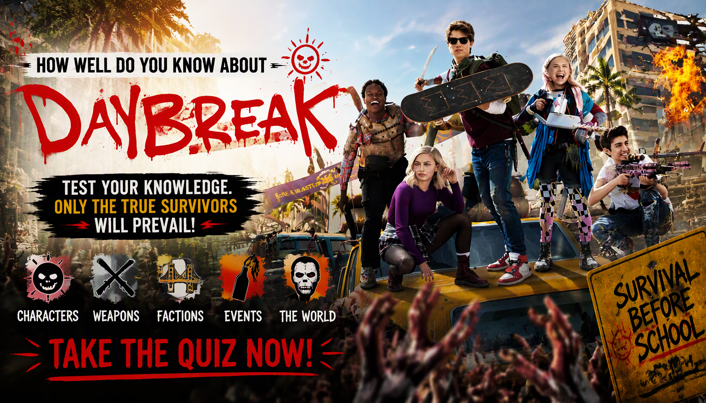

POST-APOCALYPTIC • TV TRIVIA
Daybreak Quiz
Think you know Daybreak? Test your knowledge of Josh, Sam Dean, Angelica, Wesley, Turbo, Ms. Crumble, the Ghoulies, the tribes and the strange post-apocalyptic world of Glendale.
One answer is correct for each question. Choose carefully and see how well you remember the characters, tribes, events and bizarre details of Daybreak.
This quiz contains major story details from Daybreak.


ABOUT THE QUIZ
The Daybreak TV Quiz is a 30-question trivia challenge for fans of the post-apocalyptic Netflix series Daybreak. The series follows Josh Wheeler as he searches for Sam Dean after an apocalypse transforms Glendale into a strange world divided among different groups of teenagers.
The questions cover Josh, Sam, Angelica, Wesley, Turbo, Ms. Crumble, Eli, Mona Lisa, Principal Burr, the Cheermazons, the Jocks, the Golf Team, the Game Overs and other characters and groups.
Some questions test major story events, while others focus on smaller character details, identities, relationships, philosophies and the unusual rules of the post-apocalyptic world.
Daybreak TV Show Details
Title: Daybreak
Format: Post-apocalyptic comedy-drama television series
Setting: Glendale, California
Main Characters: Josh Wheeler, Sam Dean, Angelica Green, Wesley Fists, Turbo, Ms. Crumble, Eli Cardashyan and other survivors.
The story takes place after an apocalypse leaves Glendale populated mostly by teenagers and strange groups known as tribes. With adults largely absent, survivors create their own communities, alliances and rivalries while attempting to understand the new world around them.
WHAT THIS QUIZ COVERS
The questions cover important characters, groups, locations, relationships and events from Daybreak.
Josh and Sam
Questions cover Josh Wheeler's search for Sam Dean, their relationship before the apocalypse and the decisions Josh makes while trying to find her.
Angelica and Wesley
The quiz covers Angelica's background, her survival after the apocalypse and Wesley's transformation into a nonviolent samurai.
The Ghoulies
Questions cover the zombie-like creatures known as Ghoulies and the unusual changes caused by the apocalypse.
The Tribes
The quiz covers groups including the Jocks, Cheermazons, Golf Team, Game Overs and STEM Punks, along with their leaders and conflicts.
Turbo and Principal Burr
Several questions focus on Turbo, Mona Lisa, Principal Burr, Baron Triumph and the power struggles between the different survivors.
HOW THE QUIZ WORKS
The quiz contains 30 questions. Every question has four possible choices, but only one answer is correct. Read each question carefully and select the answer you believe is correct before continuing.
Each correct answer gives you 1 point, while an incorrect answer gives you 0 points. With 30 questions in total, your number of correct answers is converted into a final percentage out of 100%.
Your final result represents your knowledge of Daybreak based on your performance. A high score means you successfully remembered many of the characters, tribes, events and unusual details featured in the series.
Quiz Navigation
Starting the quiz
Select START QUIZ on the opening screen to begin. The first question will appear with four possible answers.
Selecting an answer
Read the question and all four choices before making your decision. Select the answer you believe is correct and continue through the quiz.
Next and Back buttons
Use Next to move forward through the questions. The Back button allows you to return to an earlier question and review your selection. Your current question number and progress are displayed as you move through the quiz.
Finishing the quiz
Continue until you have answered all 30 questions. When you reach the end, submit your answers to finish the quiz and view your final percentage and Daybreak TV Knowledge result.
Try Again and Challenge Friends
After viewing your result, select TRY AGAIN to replay the quiz and attempt a higher score. You can also use SHARE MY RESULT or CHALLENGE YOUR FRIENDS to share your result and challenge other fans.
FAQ
How many questions are in the quiz?
There are 30 questions in total, and every question has four possible choices.
What is the maximum score?
The maximum result is 100%. Each correct answer contributes 1 point before the score is converted into a percentage.
What topics are covered?
The quiz focuses on Daybreak, including Josh, Sam, Angelica, Wesley, Turbo, Ms. Crumble, Eli, Mona Lisa, Principal Burr, the Ghoulies and the different tribes.
What does my score mean?
Your percentage shows how many of the 30 Daybreak questions you answered correctly. A higher score indicates stronger knowledge of the characters, events and details covered by the quiz.
Can I take the quiz again?
Yes. Select TRY AGAIN after completing the quiz to start another attempt and try to improve your score.
Can I challenge my friends?
Yes. Select CHALLENGE YOUR FRIENDS after completing the quiz to share the challenge and see whether your friends can beat your score.
Spoiler Warning
This quiz contains spoilers for Daybreak. Questions may reveal character identities, relationships, tribal alliances, major events, the Ghoulies, Turbo's group, Principal Burr, the Cheermazons and other important details from the series.
If you have not watched Daybreak, consider watching the series before taking the quiz to avoid having important story details spoiled.